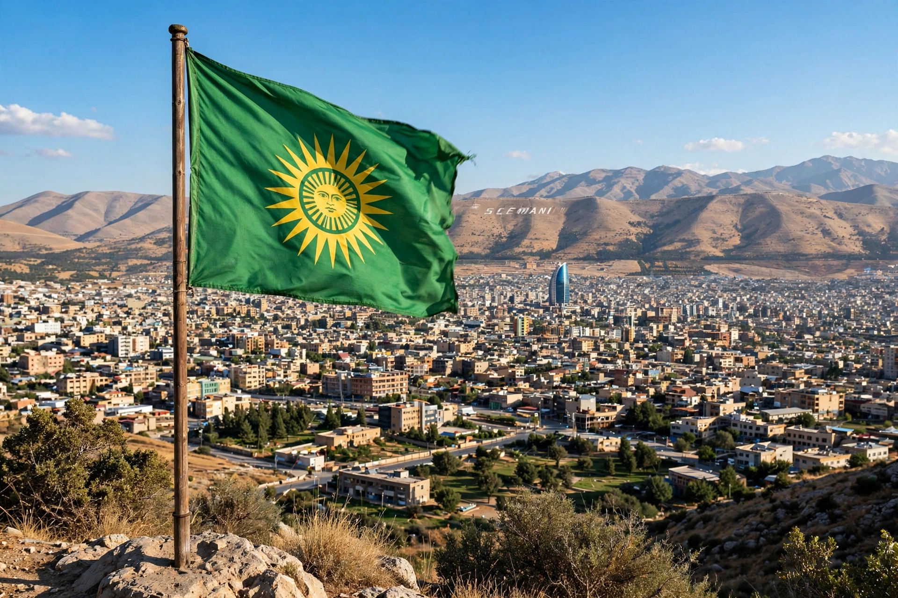

Patriotic Union of Kurdistan
| Patriotic Union of Kurdistan | |
| Abbreviation | PUK |
|---|---|
| Founded | 1 June 1975 |
| Founder | Jalal Talabani |
| Headquarters | Sulaymaniyah, Kurdistan Region, Iraq |
| Ideology | Kurdish nationalism, social democracy |
| Armed wing | Peshmerga (Unit 70) |

The Patriotic Union of Kurdistan (PUK; Kurdish: Yekêtiya Nîștimaniya Kurdistan) is a political party in the Kurdistan Region of Iraq, founded on 1 June 1975 by Jalal Talabani after a split from the Kurdistan Democratic Party (KDP) of Mustafa Barzani. It draws its support mainly from the Sorani-speaking south-east of the region, centred on Sulaymaniyah.
History
The PUK launched an armed uprising against the Ba'athist regime in 1976 and fought a civil war against the KDP in the 1990s before the two parties reconciled under the 1998 Washington Agreement. After the 2003 invasion of Iraq, Talabani became President of Iraq (2005–2014). The party shares power in the Kurdistan Regional Government with the KDP, and its peshmerga fought against the Islamic State in 2014–2017. Following Talabani's death in 2017, his son Bafel Talabani became party president.
See also: Kurdistan Democratic Party, Jalal Talabani.